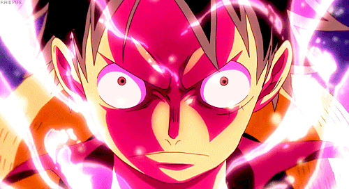

About me
As I embarked on my journey into the world of programming, I felt a mix of excitement, curiosity, and perhaps a touch of apprehension.
Hobbies
Engaging in hobbies brings me immense joy and fulfillment. From strumming guitar chords to capturing moments through photography, each activity offers a unique avenue for self-expression and relaxation. Whether it's painting, knitting, reading, or exploring nature, my hobbies allow me to unwind, learn, and create lasting memories.